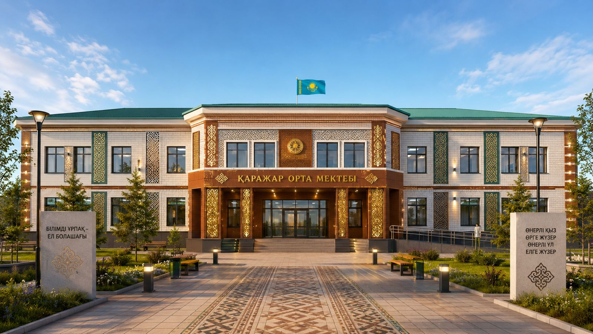
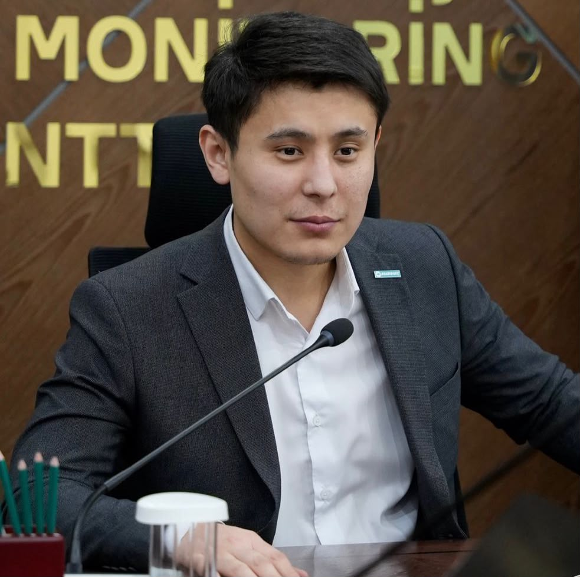
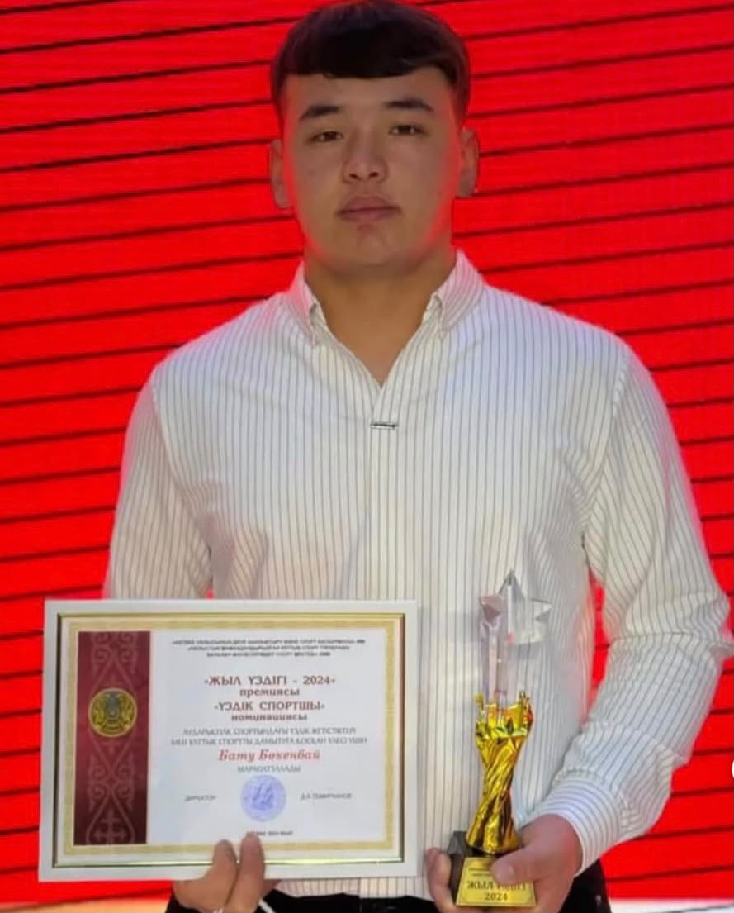
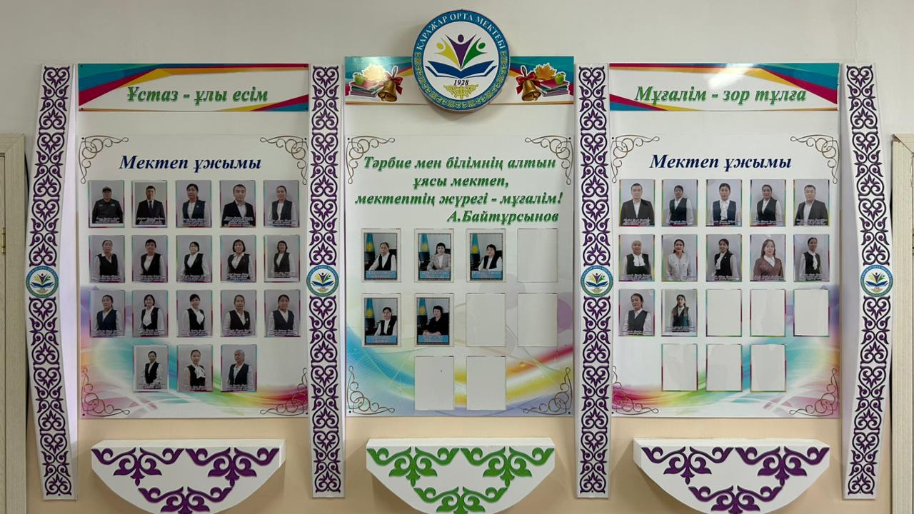
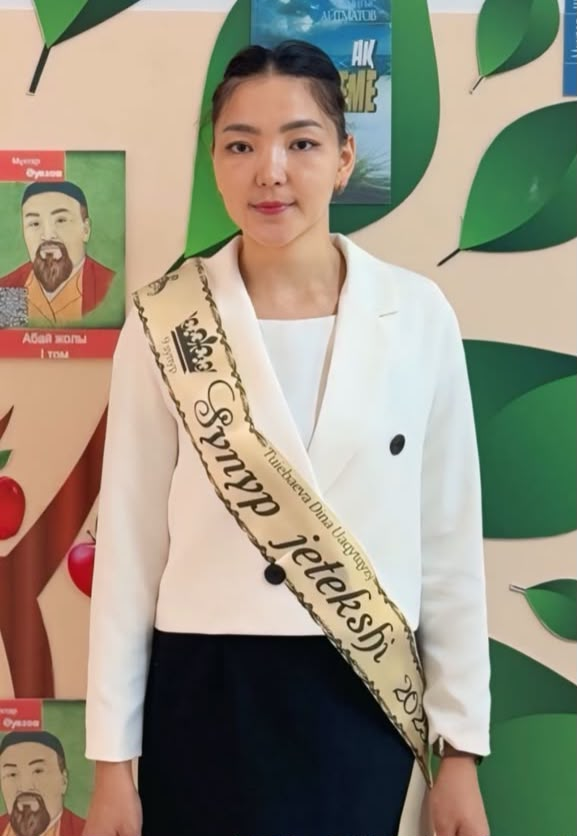
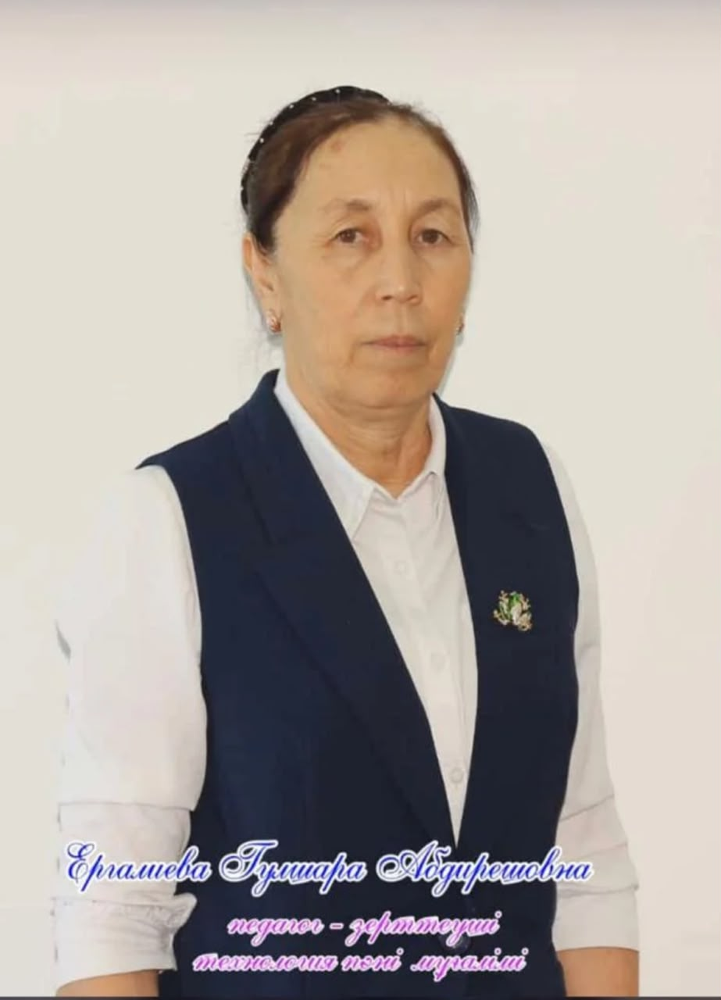

Білім — болашақтың негізі
Қаражар орта мектебінің тарихы, оқушылары, ұстаздары және ауылдың тарихи мұрасы туралы ақпараттық сайт.
Қаражар орта мектебінің VR гиді
Мектепті виртуалды түрде аралау.
Ғимарат ішіне көрініс
Ғимарат ішіне көрініс
Мектеп тарихы
Мектеп тарихы туралы мәлімет.
1957 жыл мектептің негізі қаланды, 2018 жылы 2 этажды жаңа мектеп ашылды
1957 - жыл: Қаражар орта мектебінің негізі қаланды
Мектеп оқушылары
Мектеп оқушылары туралы ақпарат.
Қаражар орта мектебінің оқушылары

Үздік түлектер
Үздік түлектер туралы ақпарат.
Үздік түлек
Жаңабай Лаура Сағындыққызы 02.03.2000 жылы дүниеге келген Қаражар орта мектебінің 2006 жылдан бастап білім алушы шәкіртімін. 2006-2007 оқу жылында Қаражар орта мектебінің 1- сыныбына қабылданып, білімнің даңғыл жолын аштым. Мектептің табалдырығын аттаған сәтте Сәулеш апайға шәкірт болып, ары қарай Мергенбаев Дәулет және Тақырова Гүлдана ұстаздарымыздың жетекшілігінде болдық. 11 – сыныпқа дейін мектеп мені барлық жақсы қасиеттерім мен білік, дағдыларымды, шығармашылығымды дамытуға зор үлес қосты. Байқанова Салтанат ұстазымның жетекшілігімен аудандық, обылыстық ақындар сайысының 2014, 2015 жылғы бас жүлде иегері боп жүрдім. Одан бөлек пәндік олимпиадаларда, әдеби бағыттағы байқауларда бақ сынап, жақсы нәтижелерге қол жеткіздім. 2016-2017 оқу жылында 11 – сыныпқа келіп, мектептен түлеп ұшуға дайындалдым. Пән мұғалімдері білімімді шыңдай отырып алтын белгіні алдым. Физика және математика пәндерін таңдай отырып, жоғары оқу орнына түстім. Қазақ ұлттық қыздар педагогикалық университетінің математика мамандығының грант иегері болдым. Унтверситет қабырғасында жүріп те шығармашылықтан қол үзбей студенттер арасындағы ақындар сайыстарында 1, 2 жүлделі орындарды алып жүрдім. Белсенділер қатарында болып, университетте ұйымдастырылған жоғары деңгейлі шараларға атсалыстым. Бұл жұмысымыз елеусіз қалмады. Сол кезеңдегі университет ректорынан және физика – математика факультетінің деканынан алғыс хат та алдым. Университетті ойдағыдай тәмәмдап, тұрмысқа шығу себебімен 2022 жылдан бастап мамандығым бойынша іске кірістім. Өз мамандығымның сара жолын Ақтөбе гуманитарлық колледжінен бастадым. 2 жыл бойы студенттермен жұмыс жасай жүріп, шәкірттерімді пәндік байқауларға, конференцияларға қатыстырып, мақтаулы нәтижелерге қол жеткіздік. 2025 жылдан бастап №78 мектеп – гимназиясында математика пәні мұғалімі қызметін жалғастырдым. Осы күнге дейін атаулы мектептің ұстазы ретінде шәкірт тәрбиелеп келемін. Өзім оқушы болған кезеңдегідей білікті де үлгілі ұстаздардың жолын қуып, дәл сол жандар секілді ерен еңбегіммен шәкірттер жүрегінен ойып орын алғым келеді.
Үздік түлек

Жаңабай Саят Сағынбайұлы. 2017 - жылғы түлек. Қазіргі таңда ҚР Қаржылық Мониторинг агенттігінің қызметкері.
Үздік түлек

Бату Бөкенбай Серікұлы - Аударыспақ спортынан ҚР күміс жүлдегері.
Мектеп мұғалімдер құрамы
Мектеп мұғалімдері туралы ақпарат.
Мұғалімдер құрамы

Қаражар орта мектебінің директоры

Шатеева Лаура
Мергенбаев Даулет Жаңабайұлы ҚО мектебінің оқу ісі жөніндегі орынбасары

Директордың орынбасары
.jpeg)
Қартен Азамат Қайратұлы ҚО мектебінің тәрбие ісі жөніндегі орынбасары
информатика пәні мұғалімі

Түйебаева Дина Уахитқызы
технология пәні мұғалімі

Ергалиева Гүлшара Абдирешовна
ЖИ жұмыстары
Жасанды интеллект бойынша жұмыстар.
Бұл бөлімге әзірге материал қосылмаған.
Қаражар ауылының тарихи жерлері
Ауылдың тарихи жерлері.
Дәуімшар батыр кесенесі
Қарасақал қорымы
Жем өзені
Мектеп іші
Мектеп ішінің көріністері.